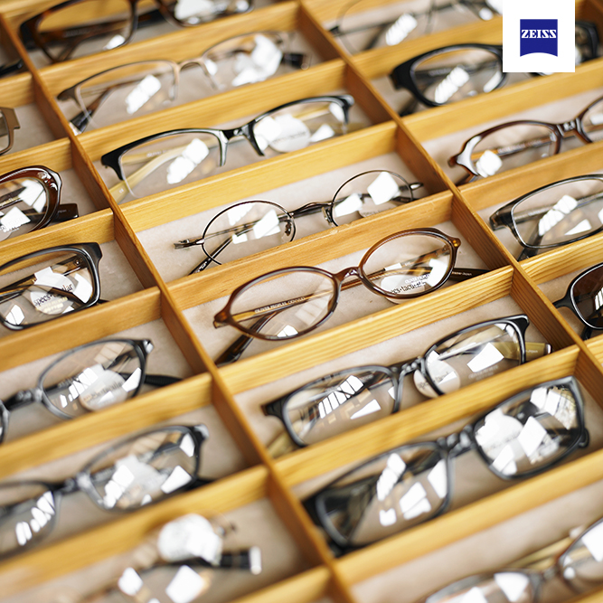

Dispensing Opticians

One of the most important steps on your journey to better vision is a conversation with one of our qualified and registered dispensing opticians. This one-on-one conversation is where our team will find out about your lifestyle and visual needs to perfectly customise a pair of lenses for your new spectacles. Lenses that are designed specifically with your visual needs in mind.
Every person's eyes are as unique as a fingerprint, and no two people have the same visual needs and habits.
Therefore, it's vital to spend time with one of our dispensing opticians. They will discuss what you expect and need from your new glasses.
There are many different factors to consider, including:
- What are your daily routines? How do you spend your time?
- Where do you wear your glasses the most? At home? At work? When playing sports or pursuing a particular hobby?
- Do you spend a lot of time using digital devices such as laptops, tablets or smartphones?
- Certain visual defects also play a role; for example: Are your eyes sensitive to light? Do you experience poor vision at night?
- Do you want to enjoy better vision in certain situations, such as when looking at objects at medium distances or when at work?
Your optician may also observe your physical behaviour. For example: do you tilt your head slightly? How does your posture change when you switch your gaze from mid-distance to something close up? Where do you hold your smartphone, or a book?
Only by performing a comprehensive analysis is it possible to provide you with an optimum consultation and to precisely tailor the lens design to match your visual needs.
When it comes to collecting your new pair of spectacles we almost always suggest having another one-on-one with one of our dispensing opticians. They will ensure that your new spectacles are fitting perfectly and you know how to use your new lenses - especially important if you are wearing multifocal lenses for the first time.
As always, here at Howick Village Optometrists, we listen so you can see.